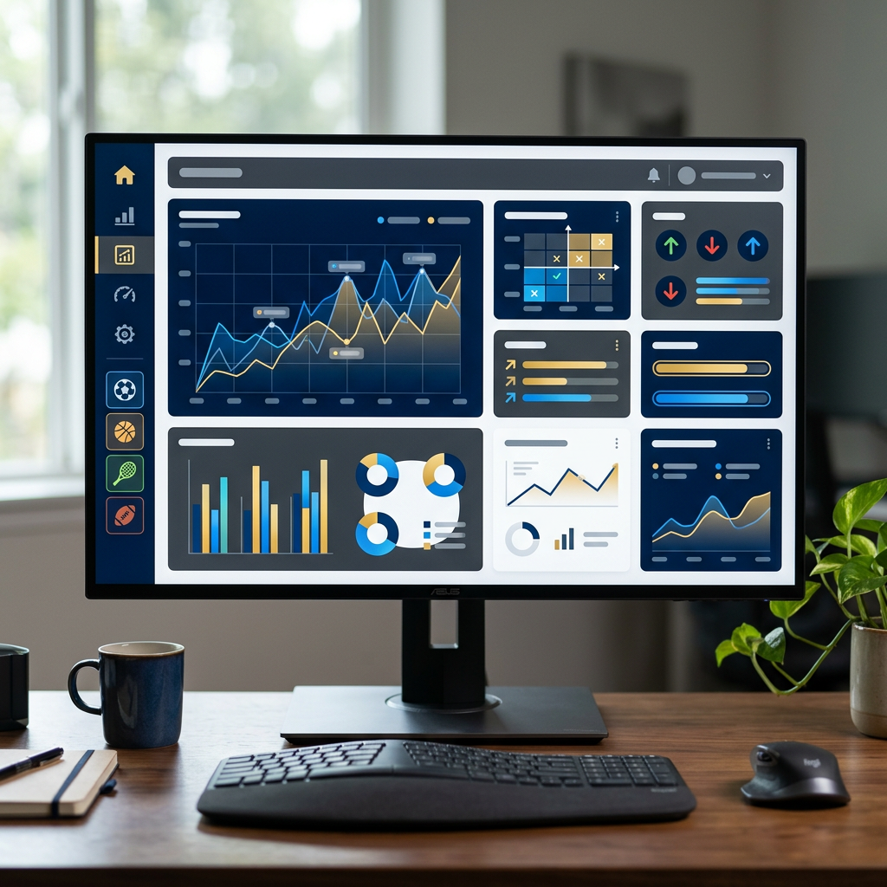
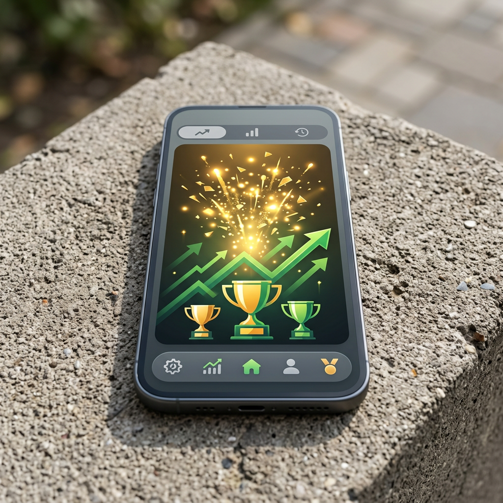

Les joueurs français qui recherchent la rapidité et l'efficacité dans leurs transactions financières se tournent de plus en plus vers les casino non aams con prelievo immediato, des plateformes offshore qui promettent des retraits instantanés sans les délais bureaucratiques habituels. Contrairement aux établissements régulés localement, ces casinos opèrent sous licences internationales et offrent une flexibilité financière sans précédent. Pour les utilisateurs frustrés par les attentes prolongées, ces sites représentent une solution concrète permettant d'accéder à leurs gains en quelques minutes plutôt qu'en plusieurs jours.

Qu'est-ce qu'un Casino non AAMS avec Retrait Immédiat ?
Un casino non AAMS est un établissement de jeu en ligne qui n'est pas enregistré auprès de l'Amministrazione Autonoma dei Monopoli di Stato italien. Ces plateformes opèrent sous des licences internationales délivrées par des autorités reconnues comme Curaçao, Malta Gaming Authority ou Gibraltar. La principale caractéristique de ces casino esteri con ritiro istantaneo est leur capacité à traiter les demandes de retrait en temps réel, sans les délais d'approbation imposés par les régulateurs locaux.
Les casinò non aams che pagano subito utilisent des infrastructures financières modernes et des partenariats directs avec les fournisseurs de paiement. Cette organisation leur permet d'éliminer les intermédiaires bancaires traditionnels qui ralentissent habituellement les transactions. Pour les joueurs, cela signifie que les fonds gagnés peuvent être transférés sur un portefeuille électronique ou une adresse crypto en moins de 15 minutes après validation de la demande.
L'avantage principal réside dans l'autonomie financière offerte aux utilisateurs. Les limites de retrait sont généralement plus élevées, les frais de transaction minimaux ou inexistants, et les procédures de vérification d'identité (KYC) peuvent être complétées rapidement grâce à des systèmes automatisés. Ces plateformes attirent particulièrement les joueurs expérimentés qui valorisent la liquidité immédiate et la transparence des conditions de paiement.
Pourquoi les Retraits Sont-ils Plus Rapides sur ces Plateformes ?
La vitesse de traitement des retraits sur les sites casino non aams repose sur plusieurs facteurs techniques et réglementaires. Premièrement, l'absence de contraintes bureaucratiques nationales permet aux opérateurs d'adopter des politiques financières plus souples. Les délais d'approbation interne sont réduits à quelques heures maximum, voire supprimés pour les clients vérifiés et réguliers.
Deuxièmement, ces casinos privilégient les méthodes de paiement modernes qui contournent le système bancaire traditionnel. Les portafogli elettronici comme Skrill, Neteller ou MuchBetter traitent les transactions en temps réel, tandis que les criptovalute (Bitcoin, Ethereum, USDT) utilisent la technologie blockchain pour des transferts quasi instantanés. Cette infrastructure technologique élimine les périodes d'attente liées aux horaires bancaires ou aux week-ends.
Troisièmement, les casino non aams crypto veloci ont développé des systèmes de vérification automatisée qui analysent les documents d'identité en quelques minutes grâce à l'intelligence artificielle. Cette automatisation réduit considérablement le temps nécessaire pour valider un compte, permettant aux nouveaux utilisateurs de retirer leurs gains dès le premier jour après inscription.
Différences entre Casinos Régulés et Casinos Offshore
| Critère | Casinos Régulés (AAMS/ANJ) | Casinos Non AAMS |
|---|---|---|
| Délai de retrait moyen | 3-7 jours ouvrables | Instantané à 24 heures |
| Limites de retrait quotidiennes | 500€ - 2 000€ | 5 000€ - Illimité |
| Frais de transaction | 2-5% selon la méthode | 0-1% ou gratuit |
| Méthodes de paiement disponibles | Cartes, virements, quelques e-wallets | Crypto, e-wallets, cartes, virements |
| Vérification KYC | Obligatoire avant premier retrait | Simplifiée ou progressive |
| Traitement week-end | Suspendu (jours ouvrables uniquement) | 24/7 toute l'année |
Comment Accélérer les Retraits sur les Casinos qui Paient Immédiatement
Pour maximiser la rapidité des transactions, la première étape consiste à compléter la vérification KYC immédiatement après l'inscription. N'attendez pas votre première demande de retrait pour soumettre vos documents d'identité. Téléchargez une copie claire de votre pièce d'identité, un justificatif de domicile récent et éventuellement une photo de votre carte bancaire (en masquant les chiffres centraux) dès la création du compte.
Utilisez toujours la même méthode pour les dépôts et les retraits. Les siti con prelievo immediato appliquent des protocoles anti-blanchiment (AML) qui peuvent retarder les transactions si vous déposez via une carte bancaire mais demandez un retrait sur un portefeuille crypto différent. Cette cohérence dans les flux financiers rassure les systèmes de sécurité automatisés et accélère les validations.
Respectez scrupuleusement les conditions de mise (requisiti di scommessa) attachées aux bonus. Un compte avec des exigences de rollover non remplies verra automatiquement ses retraits bloqués jusqu'à satisfaction des critères. Si vous privilégiez la vitesse, envisagez de jouer sans bonus ou choisissez des offres avec des conditions de mise faibles (x10-x20 maximum).
Optimisation du Profil Utilisateur
- Vérification préalable : Complétez le KYC avant le premier dépôt pour éviter tout retard ultérieur
- Cohérence des données : Assurez-vous que le nom sur votre compte correspond exactement à celui de vos documents bancaires
- Mise à jour des coordonnées : Maintenez vos informations de contact actualisées pour recevoir les notifications de validation
- Historique de jeu positif : Les joueurs réguliers avec un historique propre bénéficient souvent de traitements prioritaires
- Limites raisonnables : Les demandes de retrait conformes aux limites établies sont traitées plus rapidement que les demandes exceptionnelles
Méthodes de Paiement pour des Transactions Rapides
Les metodi di pagamento utilisés sur les casino che pagano subito déterminent directement la vitesse de réception des fonds. Les cartes bancaires Visa et Mastercard, bien que largement acceptées, peuvent nécessiter 1-3 jours pour les retraits en raison des cycles de traitement bancaire. Les virements SEPA prennent généralement 1-2 jours ouvrables et sont soumis aux horaires bancaires traditionnels.

Les portafogli elettronici représentent le meilleur compromis entre rapidité et accessibilité. Skrill, Neteller, MuchBetter et ecoPayz traitent les retraits en 0-24 heures, avec des frais généralement inférieurs à 1%. Ces solutions offrent également l'avantage de la neutralité : un portefeuille électronique peut être alimenté depuis plusieurs sources et utilisé sur différentes plateformes sans friction.
Pour les utilisateurs recherchant l'instantanéité absolue, les casino non aams crypto veloci proposent des retraits en cryptomonnaies avec des délais de 5-30 minutes selon la congestion du réseau blockchain. Bitcoin, Ethereum, Litecoin, USDT et autres stablecoins permettent des transazioni sicure sans intermédiaire, avec des frais de transaction minimaux et une confidentialité renforcée.
Cryptomonnaies : La Solution Ultime pour les Retraits Instantanés
Les criptovalute offrent l'accredito rapido le plus fiable pour plusieurs raisons techniques. Contrairement aux systèmes bancaires traditionnels qui fonctionnent par lots et selon des horaires fixes, les blockchains opèrent 24/7/365 sans interruption. Une transaction Bitcoin confirmée apparaît dans votre portefeuille en 10-30 minutes en moyenne, indépendamment du jour ou de l'heure.
Les frais de réseau sont prévisibles et souvent inférieurs aux commissions bancaires. Un retrait en USDT sur le réseau Tron coûte généralement moins de 1€, tandis qu'une transaction en Litecoin est encore moins onéreuse. Ces économies s'accumulent pour les joueurs réguliers qui effectuent plusieurs retraits mensuels. Les siti scommesse senza aams prelievo rapido favorisent ces méthodes en proposant des limites de retrait supérieures pour les utilisateurs crypto.
La confidentialité constitue un autre avantage majeur. Les transactions blockchain ne requièrent pas de partage d'informations bancaires sensibles. Votre adresse crypto fonctionne comme un pseudonyme, offrant une couche supplémentaire de protection des données personnelles. Pour les joueurs valorisant la discrétion financière, cette caractéristique est particulièrement attractive.
Portefeuilles Électroniques : Rapidité et Accessibilité
Les e-wallets comme Skrill et Neteller ont été conçus spécifiquement pour le secteur des jeux en ligne. Leur intégration profonde avec les plateformes de casino permet des transferts immédiats après validation interne. Le processus typique prend 1-6 heures maximum, avec la majorité des transactions complétées en moins de 2 heures pendant les périodes d'activité normale.
MuchBetter se distingue par son application mobile intuitive et ses fonctionnalités de sécurité avancées. La plateforme utilise la biométrie et la géolocalisation dynamique pour valider les transactions, réduisant les risques de fraude tout en maintenant une fluidité d'utilisation. Les limiti prelievo casino senza licenza italiana via MuchBetter atteignent souvent 10 000€ par transaction pour les comptes vérifiés.
EcoPayz offre un excellent équilibre entre anonymat et conformité réglementaire. Le service propose différents niveaux de vérification, permettant aux utilisateurs de choisir entre rapidité d'inscription et limites de transaction élevées. Les comptes Silver (vérification minimale) permettent déjà des retraits jusqu'à 5 000€ par mois, largement suffisant pour la majorité des joueurs.
Causes Courantes de Retard dans les Paiements
Malgré les promesses de ritiro istantaneo, certaines situations peuvent prolonger les délais. La cause la plus fréquente est une documentation KYC incomplète ou de mauvaise qualité. Les photos floues, les documents expirés ou les justificatifs partiellement visibles déclenchent automatiquement des demandes de resoumission, ajoutant 24-72 heures au processus initial.
Les incohérences dans les informations fournies constituent un signal d'alerte majeur pour les systèmes de sécurité. Si le nom sur votre compte diffère de celui apparaissant sur votre carte bancaire ou votre pièce d'identité, le retrait sera systématiquement suspendu jusqu'à clarification. Cette vérification manuelle peut prendre 3-5 jours ouvrables selon la disponibilité du service clientèle.
Les requisiti di scommessa non remplis bloquent automatiquement tous les retraits. Avant de demander un paiement, vérifiez dans votre profil que les conditions de mise attachées à vos bonus ont été entièrement satisfaites. Certains casinos affichent clairement le solde disponible pour retrait versus le solde bloqué par bonus, facilitant cette vérification.
Problèmes Techniques et Solutions
- Montant minimum non atteint : Les importi minimi pour retrait varient de 10€ à 50€ selon les plateformes ; vérifiez ce seuil avant de soumettre une demande
- Méthode de retrait différente du dépôt : Utilisez la même méthode ou contactez le support pour obtenir une autorisation préalable
- Weekend et jours fériés : Les bonifico bancario sont suspendus pendant ces périodes ; privilégiez les méthodes digitales pour un traitement continu
- Limites quotidiennes dépassées : Respectez les limiti giornalieri établis pour éviter le fractionnement automatique de votre retrait
- Compte en cours de vérification : Attendez la confirmation complète du KYC avant de demander un paiement important
Comment Choisir le Bon Casino non AAMS pour Retraits Rapides
L'évaluation d'un casino non aams con prelievo immediato doit commencer par la vérification de sa licence. Les autorités de Curaçao (Curaçao eGaming), Malta (MGA) ou Gibraltar (GBGA) garantissent un niveau minimal de conformité et de protection des joueurs. Consultez les forums et sites d'avis indépendants pour identifier les opérateurs avec un historique de paiements fiables et ponctuels.

Examinez attentivement les termes et conditions relatifs aux retraits. Les casinos transparents affichent clairement leurs limiti di prelievo, leurs délais de traitement garantis et leurs frais éventuels. Méfiez-vous des plateformes qui utilisent des formulations vagues comme "jusqu'à 24 heures" sans préciser les conditions exactes d'application de ce délai minimal.
Testez le service clientèle avant de déposer des fonds significatifs. Contactez le support via chat en direct pour poser des questions spécifiques sur les procédures de retrait. Un service réactif et compétent constitue un excellent indicateur de la fiabilité globale de l'opérateur. Les meilleurs casino senza aams offrent un support multilingue disponible 24/7.
Critères de Sélection Essentiels
| Critère | Indicateur Positif | Signal d'Alerte |
|---|---|---|
| Licence | Curaçao, Malta, Gibraltar vérifiable | Absence de licence ou informations cachées |
| Délai annoncé | Instantané à 24h avec conditions claires | "Jusqu'à 7 jours" ou formulation vague |
| Méthodes disponibles | Crypto + e-wallets + cartes + virements | Uniquement virements bancaires |
| Limites de retrait | Minimum 5 000€/jour, idéalement illimité | Maximum 500€/jour ou limites mensuelles basses |
| Frais appliqués | 0€ ou frais transparents < 2% | Frais cachés ou commissions variables |
| Support client | Chat 24/7 multilingue réactif | Email uniquement avec réponses lentes |
Sécurité et Conformité sur les Plateformes Offshore
La sécurité financière sur les casino esteri con ritiro istantaneo repose sur plusieurs couches de protection. Le cryptage SSL 256-bit sécurise toutes les communications entre votre navigateur et les serveurs du casino, empêchant l'interception de données sensibles. Les plateformes sérieuses affichent clairement leur certificat de sécurité et utilisent des protocoles HTTPS pour toutes les pages, particulièrement celles impliquant des transactions financières.
Les systèmes de détection de fraude automatisés analysent en temps réel les patterns de jeu et les comportements transactionnels suspects. Ces algorithmes peuvent temporairement suspendre un retrait si des anomalies sont détectées, mais cette précaution protège également les utilisateurs légitimes contre les accès non autorisés à leurs comptes. Les come prelevare subito casino non aams nécessitent souvent une authentification à deux facteurs (2FA) pour les opérations sensibles.
La ségrégation des fonds constitue une pratique essentielle des opérateurs responsables. Les dépôts des joueurs doivent être conservés dans des comptes bancaires séparés des fonds opérationnels du casino, garantissant leur disponibilité immédiate pour les retraits même en cas de difficultés financières de l'opérateur. Vérifiez que le casino choisi applique cette politique dans ses conditions générales.
Avantages et Inconvénients des Casinos non AAMS
Avantages Principaux
- Rapidité inégalée : Les retraits sont traités en minutes ou heures plutôt qu'en jours, offrant une liquidité immédiate des gains
- Limites élevées : Les plafonds de retrait quotidiens et mensuels sont significativement supérieurs, permettant de ritirare le vincite importantes en une seule transaction
- Frais réduits : Les commissions sur les retraits sont minimales ou nulles, particulièrement pour les méthodes crypto et e-wallet
- Flexibilité des méthodes : Large gamme d'options de paiement incluant les technologies les plus récentes
- Bonus généreux : Les offres promotionnelles sont souvent plus attractives avec des conditions de mise plus raisonnables
- Disponibilité 24/7 : Les traitements ne sont pas limités par les horaires bancaires ou les jours fériés
Inconvénients et Précautions
- Absence de protection locale : Les recours légaux en cas de litige sont plus complexes qu'avec un opérateur régulé nationalement
- Vérification de fiabilité nécessaire : Tous les casinos offshore ne sont pas égaux ; une recherche préalable est indispensable
- Barrière linguistique potentielle : Certains supports clients peuvent ne pas offrir un service en français de qualité
- Variabilité réglementaire : Les lois sur les jeux en ligne évoluent et peuvent affecter l'accessibilité de certaines plateformes
- Risque de surutilisation : La facilité d'accès et les retraits rapides peuvent encourager un jeu excessif chez les utilisateurs vulnérables
Guide Pratique : Premier Retrait sur un Casino non AAMS
Pour effectuer votre premier incasso veloce sur une plateforme offshore, suivez cette procédure étape par étape. Commencez par créer un compte en fournissant des informations exactes et vérifiables. Utilisez votre nom légal complet tel qu'il apparaît sur vos documents officiels, et fournissez une adresse email et un numéro de téléphone que vous contrôlez activement.
Immédiatement après inscription, accédez à la section "Vérification" ou "KYC" de votre profil. Téléchargez une copie claire de votre pièce d'identité (carte nationale, passeport ou permis de conduire), un justificatif de domicile récent (facture d'électricité, relevé bancaire ou quittance de loyer datant de moins de 3 mois), et si requis, une preuve de votre méthode de paiement (photo de carte bancaire avec les chiffres centraux masqués).
Effectuez un premier dépôt modeste pour tester le système. Choisissez une méthode que vous souhaitez également utiliser pour les retraits, idéalement un portefeuille électronique ou une cryptomonnaie. Jouez naturellement en respectant les conditions de mise si vous avez accepté un bonus. Une fois que vous avez accumulé des gains que vous souhaitez retirer, rendez-vous dans la section "Caisse" ou "Retraits".
Processus de Demande de Retrait
- Sélection du montant : Entrez le montant désiré en vérifiant qu'il respecte les limites minimales et maximales
- Choix de la méthode : Sélectionnez la même méthode que celle utilisée pour le dépôt ou une alternative approuvée
- Vérification des détails : Confirmez l'adresse du portefeuille crypto ou les informations du compte e-wallet
- Validation de la demande : Confirmez la transaction en entrant votre mot de passe et éventuellement un code 2FA
- Suivi de progression : Consultez l'historique des transactions pour suivre le statut de votre retrait
- Réception des fonds : Les fonds apparaissent dans votre compte selon les délais annoncés (généralement < 24h)
Comparaison des Meilleures Méthodes de Paiement
| Méthode | Délai Moyen | Frais Typiques | Limite Quotidienne | Avantages Principaux |
|---|---|---|---|---|
| Bitcoin (BTC) | 10-30 minutes | Variable (2-10€) | Illimité | Anonymat, rapidité, acceptation universelle |
| USDT (Tron) | 5-15 minutes | < 1€ | Illimité | Stabilité de valeur, frais minimaux, ultra-rapide |
| Ethereum (ETH) | 5-20 minutes | Variable (3-15€) | Illimité | Sécurité blockchain, smart contracts |
| Skrill | 0-12 heures | 0-1% | 5 000-10 000€ | Interface simple, large acceptation |
| Neteller | 0-12 heures | 0-1.5% | 5 000-10 000€ | Programme de fidélité, multi-devises |
| MuchBetter | 0-6 heures | 0% | 5 000€ | Application mobile, cashback |
| Carte Visa/Mastercard | 1-3 jours | 0-2% | 2 000-5 000€ | Familiarité, accessibilité universelle |
| Virement SEPA | 1-3 jours | 0-5€ | 10 000€+ | Limites élevées, sécurité bancaire |
Questions Fréquentes sur les Retraits Instantanés
Les casinos non AAMS sont-ils légaux pour les joueurs français ?
La légalité dépend de la juridiction. En France, seuls les sites avec licence ANJ sont officiellement autorisés. Cependant, jouer sur des plateformes offshore n'est généralement pas poursuivi pénalement pour les joueurs individuels. Les opérateurs sous licences Curaçao ou Malta sont légaux dans leur juridiction d'enregistrement. Il est recommandé de consulter les lois locales et de jouer de manière responsable.
Combien de temps prend réellement un retrait "instantané" ?
Un retrait instantané sur les meilleurs casinos non AAMS prend entre 5 minutes et 24 heures selon la méthode choisie. Les cryptomonnaies sont les plus rapides (5-30 minutes), suivies des e-wallets (1-12 heures). Les cartes bancaires et virements nécessitent 1-3 jours. Le délai inclut le temps de validation interne du casino (généralement < 1 heure pour les comptes vérifiés) et le temps de traitement du fournisseur de paiement.
Dois-je payer des taxes sur mes gains de casino offshore ?
Les obligations fiscales varient selon votre pays de résidence. En France, les gains de jeux de hasard ne sont généralement pas imposables pour les joueurs occasionnels. Cependant, les gains réguliers ou considérés comme une activité professionnelle peuvent être soumis à déclaration. Les joueurs suisses, par exemple, doivent déclarer les gains dépassant certains seuils. Consultez un conseiller fiscal pour votre situation spécifique.
Puis-je retirer des gains obtenus avec un bonus sans dépôt ?
La plupart des casinos non AAMS permettent de retirer les gains issus de bonus sans dépôt après avoir satisfait les conditions de mise (généralement x30 à x60 fois le montant du bonus). Un dépôt minimal de vérification (10-20€) est souvent requis avant le premier retrait pour valider votre méthode de paiement et votre identité. Lisez attentivement les termes du bonus car certains limitent les gains maximaux retirables (souvent 50-100€).
Que faire si mon retrait est retardé ou refusé ?
Vérifiez d'abord que vous avez complété le KYC, respecté les conditions de mise et utilisé une méthode compatible. Consultez l'historique de vos transactions pour le statut exact. Contactez le support client via chat en direct pour obtenir des éclaircissements spécifiques. Si le problème persiste après 48 heures sans explication satisfaisante, documentez tous les échanges et envisagez de contacter l'autorité de licence du casino (les coordonnées figurent généralement en bas du site). Les forums spécialisés et sites d'avis peuvent également aider à résoudre les litiges.
Conclusion
Les casino non aams con prelievo immediato représentent une alternative convaincante pour les joueurs qui valorisent la rapidité, la flexibilité et l'autonomie financière. Grâce à des infrastructures technologiques modernes et des réglementations offshore plus souples, ces plateformes offrent des délais de retrait incomparables avec les casinos traditionnellement régulés. Les utilisateurs peuvent accéder à leurs gains en quelques minutes via cryptomonnaies ou en quelques heures via portefeuilles électroniques.
Le succès d'une expérience de retrait instantané repose sur plusieurs facteurs contrôlables : compléter immédiatement la vérification KYC, choisir des méthodes de paiement modernes et rapides, maintenir la cohérence entre dépôts et retraits, et respecter scrupuleusement les conditions de mise attachées aux bonus. Les joueurs informés qui suivent ces meilleures pratiques peuvent systématiquement bénéficier de transactions fluides et prévisibles.
Il est essentiel de sélectionner des opérateurs fiables avec des licences vérifiables et des historiques de paiements positifs. La transparence des conditions, la réactivité du support client et la diversité des méthodes de paiement constituent des indicateurs de qualité fiables. Bien que les casino esteri con ritiro istantaneo offrent des avantages indéniables, les joueurs doivent rester vigilants et privilégier les plateformes établies avec des réputation solides dans la communauté.
Les siti casino non aams continueront d'évoluer avec les technologies émergentes comme les paiements en stablecoin, les solutions Lightning Network pour Bitcoin, et l'intégration croissante de l'intelligence artificielle pour des vérifications KYC quasi instantanées. Pour les joueurs qui comprennent les nuances de ces plateformes et adoptent des pratiques responsables, l'accès immédiat aux gains représente non seulement une commodité, mais aussi une démonstration tangible du respect de leur liberté financière.